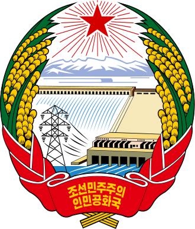
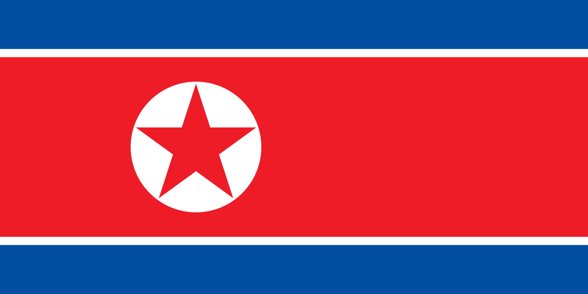
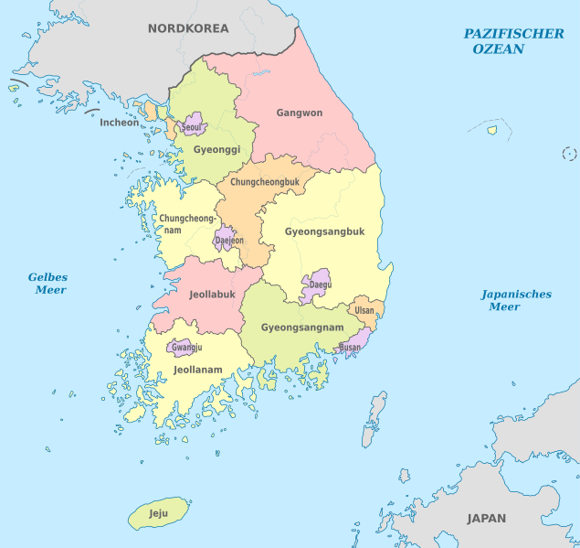

Differenze tra il Nord e il Sud
|


La Repubblica Popolare Democratica di Corea o Corea del Nord è una Repubblica socialista basata sui principi del Juche e del Songun. |
|
|
Presidente della Corea del Nord: Kim Il-sung (Presidente eterno), |
Presidente della Corea del Sud: Moon Jae-in Eletto dal popolo ogni 5 anni, non immediatamente rinnovabile, è capo dell’esercito di difesa della Corea. |
|
Commissione di Difesa Nazionale: È il massimo organo di direzione della difesa nazionale all'interno del potere statale. Uno dei doveri è delineare le principali politiche dello stato ed eseguire la linea rivoluzionaria basata sul Songun e Juche. |
|
|
Potere esecutivo: Consiglio dei Ministri |
Potere esecutivo: State Council (Consiglio di stato) |
|
Potere legislativo: Assemblea Popolare Suprema |
Potere legislativo: Assemblea nazionale (Kuk Hoe) |
|
Suddivisioni amministrative: La Corea del Nord è suddivisa in nove province, più due città governate direttamente e tre regioni speciali.  |
Suddivisioni amministrative: La Corea del Sud è suddivisa amministrativamente in 1 città speciale, 6 città metropolitane e 9 province di cui una a statuto speciale 
|
|
Economia: Capitalismo autoritario |
Economia: Capitalista |